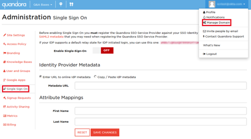
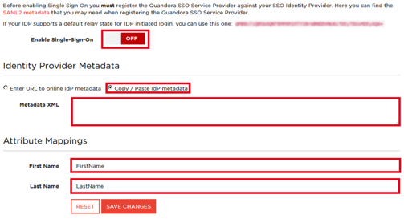
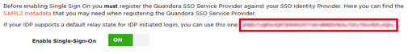

This setup might fail without parameter values that are customized for your organization. Please use the Okta Administrator Dashboard to add an application and view the values that are specific for your organization.
Log into Quandora with your administrator credentials.
Navigate to Manage Domain > Single Sign On.

On the Single Sign On page, enter the following (see screen shot at end of step for reference):
Select the Copy / Paste IdP Metadata radio button.
Copy the following IDP Metadata into Metadata XML field.
Enter FirstName as the value for the First Name field.
Enter LastName as the value for the Last Name field.
Select SAVE CHANGES.
Select Enable Single-Sign-On.

Save the Default Relay State.

In Okta, navigate to the Sign On tab for the Qandora app, then select Edit.
Enter the Default Relay State you saved (step 4 above) into the corresponding field.